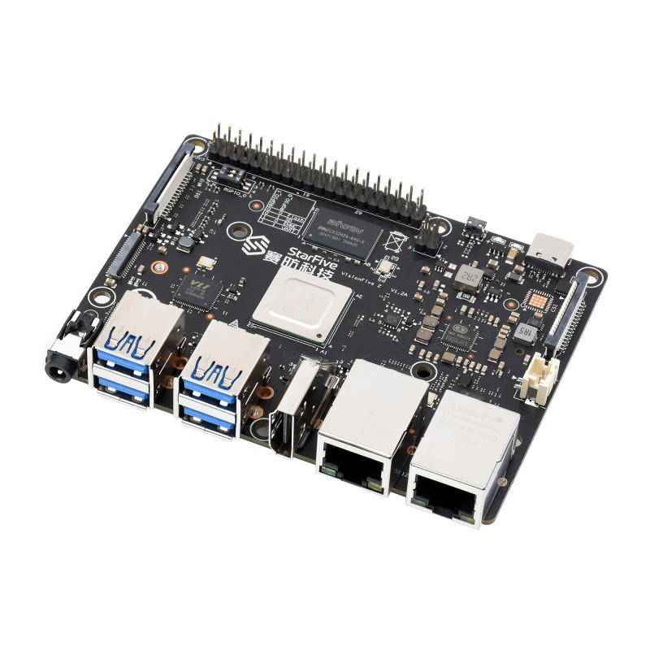

StarFive VisionFive 2 (starfive-visionfive2)
Jump to navigation
Jump to search
|
 Board shot of the VisionFive 2 SBC | |
| Manufacturer | StarFive |
|---|---|
| Name | VisionFive 2 |
| Codename | starfive-visionfive2 |
| Released | 2022 |
| Category | testing |
| Original software | Debian |
| Hardware | |
| Chipset | StarFive JH7110 |
| CPU | Quad-core RV64GC (4x SiFive U74 @ 1.5 GHz) |
| GPU | IMG BXE-4-32 MC1 @ 600 MHz |
| Display | 1x HDMI 2.0 port, 1x 4-lane MIPI DSI, 1x 2-lane MIPI DSI |
| Storage | M.2 2280 M-key SSD slot (PCIe 2.0 x1 lane), eMMC socket, microSD slot |
| Memory | 2/4/8 GB LPDDR4 @ 2800 MHz |
| Architecture | riscv64 |
| Type | Single Board Computer |
{kind=link}
This device is marked as not booting.
Status: pmOS port hasn't been attempted yet
Status: pmOS port hasn't been attempted yet
| USB Networking | |
|---|---|
| Flashing |
Unavailable
|
| Touchscreen |
Unavailable
|
| Display | |
| WiFi | |
| FDE | |
| Mainline |
Broken
|
| Battery |
Unavailable
|
| 3D Acceleration | |
| Audio | |
| Bluetooth | |
| Camera | |
| GPS |
Unavailable
|
| Mobile data |
Unavailable
|
| SMS |
Unavailable
|
| Calls |
Unavailable
|
| USB OTG / USB-C Role switching | |
| NFC |
Unavailable
|
| Accelerometer |
Unavailable
|
|---|---|
| Magnetometer |
Unavailable
|
| Ambient Light |
Unavailable
|
| Proximity |
Unavailable
|
| Hall Effect |
Unavailable
|
| Barometer |
Unavailable
|
| Power Sensor |
Unavailable
|
| Camera Flash | |
|---|---|
| Keyboard |
Unavailable
|
| Touchpad |
Unavailable
|
| USB-A | |
| HDMI/DP | |
| Ir TX |
Unavailable
|
| Ir RX | |
| Stylus | |
| Haptics | |
| Ethernet | |
| FOSS bootloader |
Works
|
Users owning this device
- Deathmist (Notes: 8 GB RAM, v1.3B)
See also
- VisionFive 2 - open source quad-core RISC-V dev board
- VisionFive 2 Single Board Computer Quick Start Guide
- VisionFive 2 Datasheet
- Main firmware source code repo (U-Boot SPL, OpenSBI, ...)
- Some basic info about the WIP Open Source GPU driver
- StarFive JH7110 SoC Upstream Status
- StarFive RISC-V DTS in Torvalds' tree